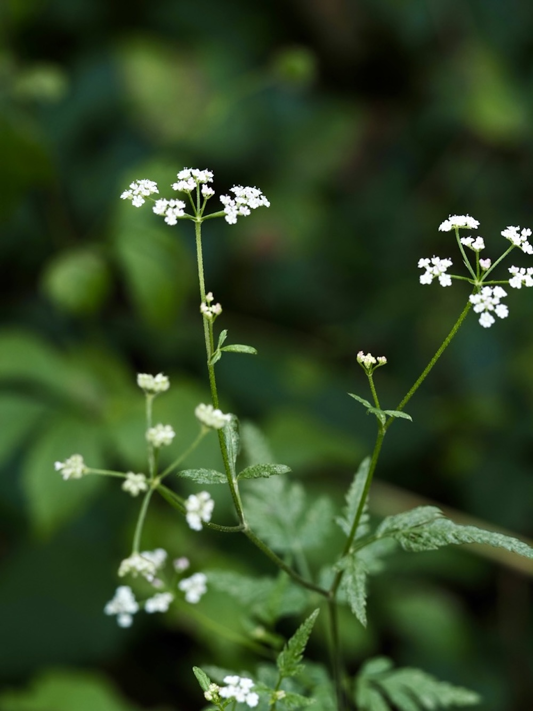

Filigrane Wiesendolde mit Klett-Samen — eine japanische Reisende.


Der unscheinbare Welt-Reisende
Trotz des Namens „japonica“ ist diese Pflanze in Mitteleuropa heimisch — der Name kommt daher, dass sie zuerst aus Japan beschrieben wurde, wo sie ebenfalls vorkommt. Sie kommt fast überall in Eurasien vor, vom Atlantik bis Japan. Eine wahre Welt-Bürgerin, die in jeder ungemähten Wiese und in jedem schattigen Saum gedeiht.
Kletten als Verbreiter
Die kleinen, ovalen Früchte sind dicht mit hakenförmigen Borsten bedeckt — wie winzige Kletten. Sie heften sich an Tierfell, Hosenstoff, Schuhsohlen und werden so kilometerweit verbreitet. Wer im September ungemäht durch eine Wiese geht, kommt oft mit einer ganzen Kollektion solcher Klett-Kerne nach Hause.
Wissenswertes & Merksätze
Erkennen leicht gemacht
Schlanker, kantig-gefurchter Stängel. Blätter zwei- bis dreifach gefiedert mit kleinen, fein gezähnten Fiederchen — sehr filigran. Doldenstrahlen schmal, weiße kleine Einzelblüten, oft mit zartem rosa Rand.
Sehr ähnliche Verwandte
Klettenkerbel ist leicht mit anderen kleinen Doldenblütlern verwechselbar (Anthriscus, Aethusa). Der entscheidende Unterschied: Die kletten-besetzten Früchte und das spätere Blühen (ab Juni statt April/Mai).